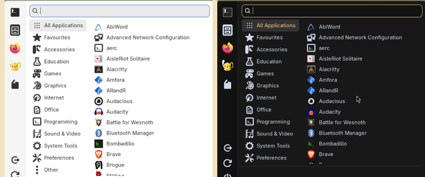
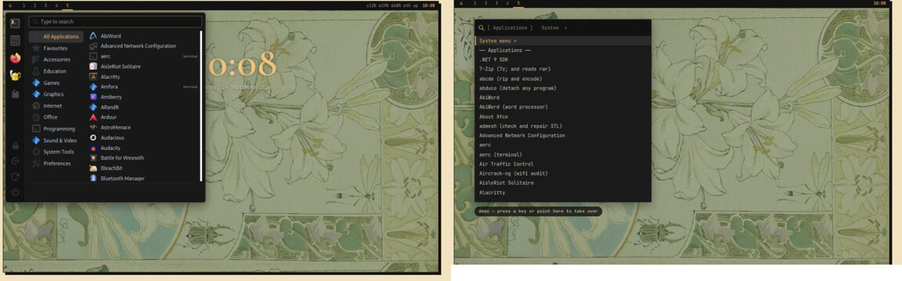

Writing a Command Reference Against the Machine: Screen Automation, Log Feedback and Human Review in the Copal Terminal Guide
Lab Report — IEEE Format
Copyright (c) 2026 Paul Richeson. MIT licensed — see LICENSE. Copal Linux is
an aggregation of Alpine Linux, not a derivative work of it; Alpine and its
packages remain under their own licences.
Copal Linux, Hyprland 0.54 desktop, Alpine 3.24 aarch64 guest under UTM on a Mac: the "bench". 23–24 September 2026. The work was done by the author with an AI coding assistant (Claude) in one terminal on the bench, in reviewed batches; this report records the method as well as the results, so the method can be used again.
Abstract
The Terminal Guide is one hyperlinked page describing every terminal command
a Copal machine installs — 290 of them — in a fixed template: a purpose, why
Copal carries it, its use, working examples, the options that matter, and
the notes people need. This report describes the process that produced 179 of
those entries in two days, and the property that made it trustworthy: every
statement was checked against the installed program on a running Copal
machine, not written from memory. Facts (package, version, dependencies,
installing stage, man page) were generated from the machine; the written
layer was drafted in batches of about twenty, and a checker refused any
option the installed man page or --help did not document. Screen automation
on the desktop captured pictures for the documentation and for review, and
the feedback cycle ran through log files, screenshots and the author's
review of each batch before it was committed. Writing against the machine
found and fixed eleven defects in the installer itself — programs installed
but unusable, from Tesseract with no language data to a corrupted man-page
index — and caught about thirty statements in the drafts that were wrong for
this version of the program. Section VI gives the procedure as a checklist.
I. Objective
- A working process for filling a documentation template — one file per command, the same sections every time — for a few hundred programs, at a rate of a batch of about twenty per review cycle.
- Entries that are correct for Copal: its Alpine packages, BusyBox, musl, OpenRC, its installer's choices, its desktop — not the answers found online for other systems.
- Every defect the writing uncovers fixed in the installer, so a clean install carries the fix, and the documentation never describes a workaround where a fix was possible.
- Integration pictures and samples taken by automation on the real desktop, without disturbing the person using it.
- A record of the method, this report, so the rest of the catalogue and the next project can use it.
II. Materials
- The bench: a Copal full-monty install, aarch64, 128 GiB disk, 2779 packages, running the Hyprland desktop; the author's terminal on workspace 2.
- The repository:
copal-prep.sh(the installer, 34 000 lines), the stage playbooks (playbooks/Stages/),tools/copal-store(Copal Apps),docs/(the site, published by GitHub Pages). - The generator:
tools/copal-command-ref.py, withinventory,collect(facts from apk and mandoc),man-html(the man pages as site pages),render(the page) andcheck(the notes against the machine). - The template:
docs/commands/<Section>/<cmd>.md— a header ofcommand,purpose,why,see, then## Use,## Examples,## Options,## Notes. - Screen tools:
grim(screenshots by region),hyprctl(windows, workspaces, the pointer),foot(a terminal per sample), headless Firefox (--screenshot) for the site's own pages, ImageMagick. - The assistant, working only in the author's terminal: no background agents, one batch at a time, committing only when told.
III. Method
A. Two layers: generated facts and written notes
Nothing that can be read from the machine is written by hand. make
commands-facts, run on the bench, walks the inventory (the core list, the
catalogue, the store, Copal's own programs), asks apk for each command's
package, version, origin and dependencies in batched queries, finds the
stage that installs it, and reads the man page's NAME and SYNOPSIS. The
result is docs/commands/facts.json, committed, so the page can be rendered
anywhere. The written layer — purpose, why, use, examples, options, notes —
sits beside it in one small Markdown file per command.
B. The batch loop
Each batch was about twenty commands from one or two sections:
- Survey. Facts, catalogue rows and anything Copal writes for the
program (
grepof the installer); its--helpand man page captured to scratch. - Probe the specifics. Small experiments on the bench before a claim
was written: does
logreadwork here (no — syslogd writes a file), may a user rundmesg(no —dmesg_restrict), does-fsanitize=addresslink (no — no runtime), does the game start (ZAngband did not). - Write the entries, one file each.
- Check.
make commandsrenders the page and runscheck, which refuses a note whose options are not in the installed man page or--help(section C). - Run the examples that are safe as a user, in a scratch folder.
- Record the batch in
docs/terminal-guide-plan.md, stop, and hand it to the author: the list, what was found, what was fixed, what was not tested. - Review and commit. The author reads the files; "fine, commit and push" ends the cycle.
C. The checker as a colleague
check began as a lint for missing sections and grew, batch by batch, into
the reviewer that caught most errors. It reads, for each command, the man
page (and its subcommand pages: apk-add(8) for apk add) and the program's
own help, and every flag in an entry's Options section must appear there.
The help is read the way each program actually gives it:
- both output streams (ssh, resize2fs and orrery print usage on stderr);
--help-extra,--show-optionsand--fullhelpwhere--helppoints to them (tesseract, GHC, Nim), and-hwhere--helpstarts the program (ZAngband);- with colour codes and OSC 8 links stripped (coreutils 9.11 wraps each
option in a link, which hid
sha224sum -b); - accepting the documented shorthand forms: apk's
--no-X, clang's-W<warning>,--[no-]name,-[no-]name, and glued values such as dot's-ooutfile; - following a man page that is only
.soto the page it names (pdflatex).
Every widening of the checker was a response to a correct option it had refused; none was made to let a wrong one through.
D. Screen automation, safely
Pictures were taken three ways:
- The site's own pages in headless Firefox (
--screenshot), then cropped: nothing of the desktop can appear in them. - Program samples in
foot, one window per command with its own app-id, opened on an empty workspace withhyprctl dispatch exec "[workspace N silent] ..."; the window's position is read fromhyprctl clients -jand only that rectangle is captured withgrim -g, after confirming the workspace is showing; then the window is closed. - The real menus, opened for a moment and captured, then closed; anything beyond the menu cropped away before a picture is kept.
The first attempt used the existing gallery probe on workspace 2, where the author's own terminal lives, and its full-screen captures included that terminal. They were deleted before anything was committed, and the rules above — own workspace, capture by window geometry, check the workspace before the shutter, look at every picture before keeping it — came from that. The author's instruction afterwards was simpler still: launch test windows on workspace 3, and close them.
E. The feedback cycle: logs, pictures, review
Three signals closed the loop. Logs: build logs (copal-store's
per-build log and its summary), /var/log/messages, and each command's own
error output — tesseract's "Failed loading language 'eng'" is what found
its missing data. Pictures: every capture was looked at before it was
kept, and a picture was how the terminal leak in D was noticed and how the
menu backgrounds were judged. Review: the author read each batch; the
most valuable review comments were the ones that changed direction
("man pages from the READMEs", "add the optionals", "this report").
IV. Results
A. The guide
| Commands in the inventory | 290 |
| Entries written and checked | 179 (Security's 11 left as facts, by choice) |
| Man pages on the site | 192, of which 8 made from project READMEs |
| Review batches, each committed after review | 10, in 15 commits (1d243a4 … 0628fdc) |
| Time per batch of ~20 | roughly an hour, most of it probing |
Every entry passes check on the bench: its options are in the installed
program's own documentation, its examples were run where running them is
safe, and each claim about Copal was traced to the installer or tried on
the machine.
B. Defects found by writing, fixed in the installer
| Found while writing | What was wrong | Fix |
|---|---|---|
man / apropos |
mandoc.db corrupt: makewhatis raced mandoc-apropos's own background trigger |
take the trigger's lock (install_manuals, Copal Apps) |
bluetoothctl |
headphones paired but PipeWire could not play to them | stage 10 installs pipewire-spa-bluez |
tesseract |
installed with no language data: it read nothing | the row brings tesseract-ocr-data-eng |
zangband |
died at start for anyone outside group users |
stage 12 adds the account |
robots, snake, atc |
scores shown, then lost: wrong path in the package | stage 12 links /var/lib/bsdgames |
tshark, termshark |
could not capture: dumpcap is group wireshark only |
stage 12 adds the account |
abcde |
no encoder installed, so it ripped and stopped | the row brings vorbis-tools and flac |
| Super+A menu | hover made the list run away; the panel vanished against a light terminal | calm edge scrolling; the theme's opaque menu ground |
| the Menu's Install | a program installed from the menu got no man page, no plugins | copal-install calls the store's manpages and optionals |
| every program | plugins, codecs and format loaders never installed | the optionals table (section D) |
the ~/code programs |
no man pages at all | copal-build makes one from each README |
Five tool defects were fixed on the way: ip linked to the socket page
ip(7), cargo credited to the bench's personal rustup, pdflatex's man page
empty on the site, the checker blind to stderr and to OSC 8 links.
C. What the drafts got wrong, and what caught it
About thirty statements in the drafts were wrong for this machine and were corrected before review. They fall into four kinds:
- Options from another version (caught by
check): robots and snake options from other BSD games; Syncthing 1's flags in Syncthing 2; croc's old way of receiving;7z -mhe=onas a separate switch. - Keys and file locations from memory (caught by reading the program's own help or strings): aerc's reply keys, openmpt123's seek keys, Brogue's save folder, cdw's quit key, atc's command syntax.
- Absences that were not (caught by trying): plain
luaexists (it is 5.1); w3m's image support is installed; sc-im exports XLSX. - Things that do not exist here (caught by
command -v):vimtutor,ms_print,cowsay, a web pagelinkscould render.
Where a key or path could not be confirmed from the program itself — tty-solitaire ships no documentation — it was left out rather than guessed.
D. The optionals
Alpine has no "recommends". A table in tools/copal-store now names each
program's plugins, codecs, helpers and data (57 rows), with rows keyed on
shared libraries so whole groups gain formats at once: gdk-pixbuf's loaders
(WebP, AVIF, HEIF, JPEG XL, camera RAW) for every GTK viewer, Qt's image
plugins, ImageMagick's and libheif's modules, and GStreamer's good, bad,
ugly and libav plugins. Server modules, -systemd files, language library
ecosystems, Vim plugins and giant data sets are left out on purpose. On the
bench it adds 143 packages, 0.7 GiB. The build summary gained a "with" line:
what each source build found and compiled in — OpenShot's shows FFmpeg,
ALSA, Qt6 and ZeroMQ — the answer to "which formats and codecs does this
build have".
E. Pictures

Fig. 1. Super+A (copal-gui), before and after: the panel on the GTK window colour, then on the theme's menu ground. Captured on the bench, cropped to the menu.

Fig. 2. The home page's simulations of both menus after the change, captured with headless Firefox: Super+A (left), Super+Z (right).
V. Discussion
The machine is the specification. The largest single finding is that an entry written from general knowledge is wrong often enough to matter — about one in six drafts had something that was true elsewhere and false here. The remedy was not more care but a different source: the installed help, a probe, a run. The checker made that systematic for options; the probes did it for behaviour.
Documentation finds bugs. Writing "what it is for, with an example that works" is an integration test with a human reason attached. Eleven of the installer's defects surfaced this way, several of them silent for weeks: a program that installs, appears in the menu, and does nothing. The rule held throughout: fix it in the installer, then describe the fixed program; document a workaround only where no fix is Copal's to make (wofi's scrolling, which Copal cannot change from outside).
Small, reviewed batches. A batch of about twenty was small enough to review in one sitting and large enough to find a section's shared problems (the group-permission pattern appeared in three games and two capture tools). Stopping for review after every batch cost minutes and bought the author's corrections at the point they were cheapest.
Automation on a desktop someone is using. The screen is shared with a
person. Three incidents shaped the rules in III-D. Full-screen captures
included the author's terminal; they were deleted and capture moved to
window geometry on a separate workspace. A test command passed a list of
names inside a quoted sh -c string, where each new line became a command
of its own, and opened AbiWord beside the author's terminal; it was closed,
the cause found without running anything, and the lesson kept. And
pkill -f PATTERN twice matched the shell running it. Each was reported
the moment it was noticed.
Working in one terminal. The author asked for no background agents and for commits only on instruction; both held for the whole session. Two kinds of interruption shaped the working rhythm. A paste through the guest–host clipboard arrived garbled, and the right response was to ask, not to guess. Several long responses were cut off partway by an automated safety check; nothing half-written was kept, and writing one entry per step, with a check after each few, avoided further interruptions. When the author rejected a command that had already partly run, its effects were found and undone before anything else.
What remains. The rest of the catalogue (Devtools, Terminals, Radio, Instruments, Learn, Control) and the store's shelf; the program pictures for terminal commands, of which 31 of 126 were captured before the sweep was paused; and a clean install from the current installer, which is the test every fix in IV-B still owes.
VI. Procedures
To write a batch:
make commands-factson a Copal machine when packages have changed.- For each command: read its catalogue row and
grepthe installer for it; capture--help(both streams) andman; try the claims that are specific to Copal (permissions, paths, services, what is installed). - Write
docs/commands/<Section>/<cmd>.mdin the template, one at a time. Options only as the program documents them; keys only as the program's own help lists them; nothing from memory that could not be confirmed. make commandsafter every few;make lintbefore stopping.- Run the safe examples in a scratch folder.
- If a program does not work as installed: fix the installer (catalogue
row, stage, Copal Apps), sync (
make sync-playbooks,make sync-store), then document the fixed program and date the fix in the note. - Record the batch in
docs/terminal-guide-plan.md; stop for review; commit and push on the author's word.
To take a picture on the desktop:
- Open the window on its own workspace (3):
hyprctl dispatch exec "[workspace 3 silent] CMD". - Read its geometry from
hyprctl clients -j; switch to the workspace and confirm it is showing (hyprctl activeworkspace) before capturing. grim -g "X,Y WxH"that rectangle only; never the whole screen.- Close the window by its class or PID — never
pkill -fwith a pattern that appears in your own command. - Look at the picture before keeping it; crop anything that is not the subject.
VII. Files touched
docs/commands/*/*.md— the entries (179);docs/commands/facts.json,docs/commands.html,docs/man/*.html— generated.tools/copal-command-ref.py— the collector, renderer and checker.tools/copal-readme-man— man pages from READMEs;copal-build'swrite_man, incopal-prep.sh.tools/copal-store—optionals_table,optionals_for,manpages, the summary's "with" line.tools/copal-gui,docs/menu-sim.*,docs/textmenu-sim.js— the menus.playbooks/Stages/04,07,10,12,18andcopal-prep.sh— the installer fixes of IV-B.docs/terminal-guide-plan.md— the plan and each batch's record.
References
[1] Copal Linux, "The Terminal Guide: plan," docs/terminal-guide-plan.md, 2026.
[2] Copal Linux, "Installing Extra Packages and Libraries During Integration
Testing," docs/integration-lab-report.md, 2026.
[3] Alpine Linux, "apk-tools 3 documentation," man pages apk(8) and
apk-add(8).
[4] mandoc, "makewhatis(8) and the mandoc.db format," man pages on the bench.
[5] Hyprland, "hyprctl," hyprctl --help, version 0.54.3.